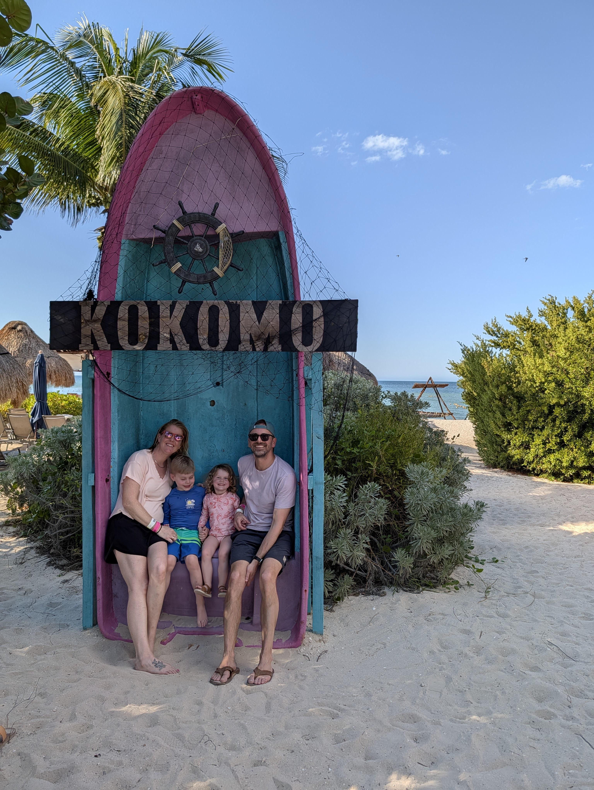
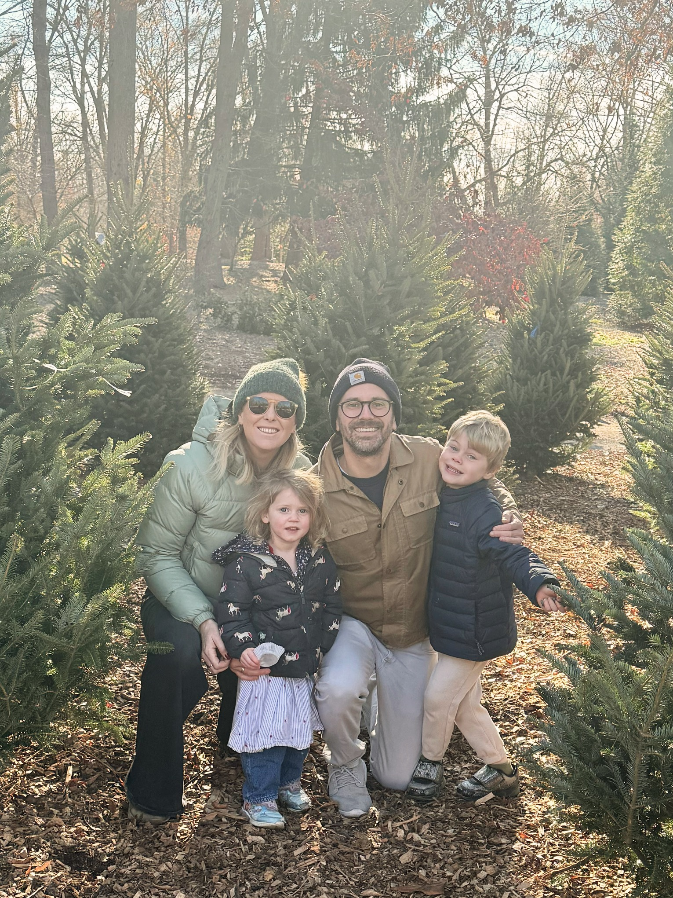
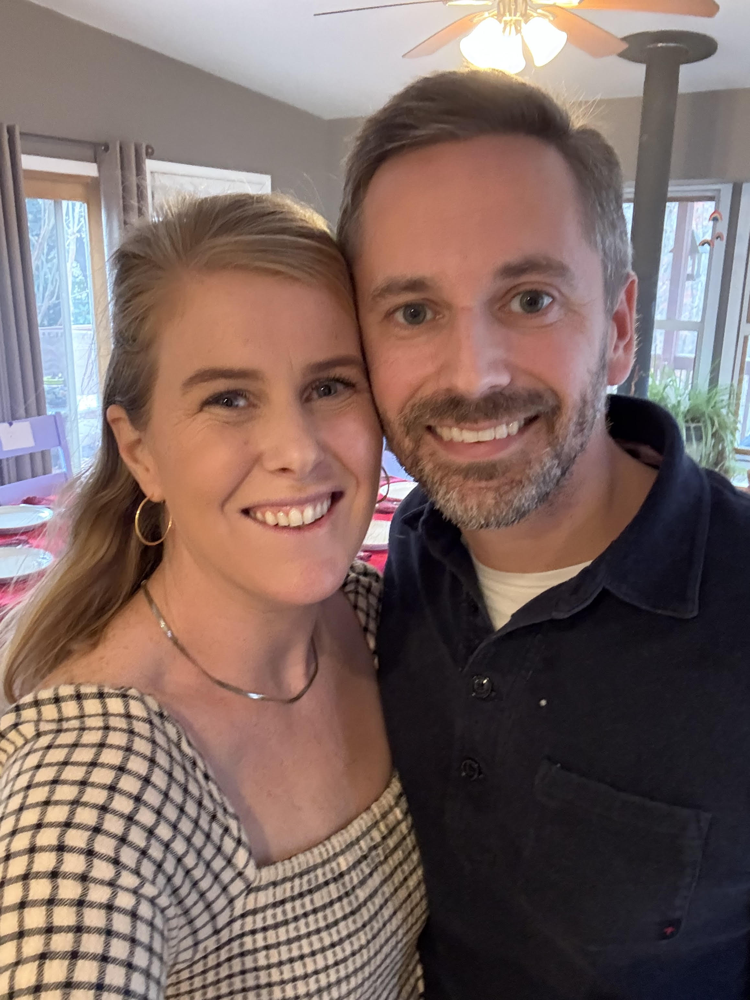
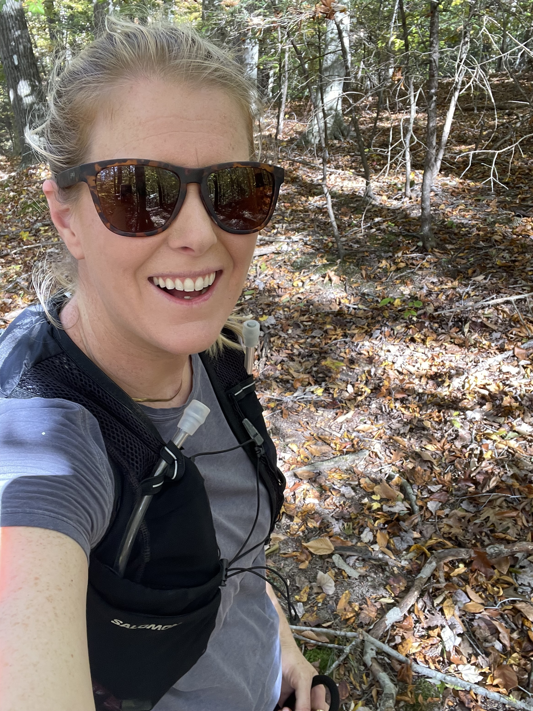

Senior Policy Analyst · RAND Corporation · DrPH Candidate
Policy researcher with 12 years of experience studying the systems, policies, and people that shape maternal health, reproductive care, and health equity. I specialize in qualitative and mixed methods — designing studies that center the voices most often left out of health policy conversations.
Research Focus
Co-leading the first national RCT of a direct-to-consumer telelactation app; evaluating virtual doula services, remote hypertension monitoring, and contraceptive access.
Studying racial and ethnic disparities in breastfeeding support, telehealth access among Medicare and Medicaid beneficiaries, and equity in community-based dementia care.
Developing and refining interview, focus group, and coding frameworks. Passionate about authentic entry approaches and centering marginalized perspectives in research design.
Evaluating policy reforms across workers' compensation, military mental health confidentiality, ACA implementation, and Medicare ACO patient experiences.
Skills & Methods
Experience & Education
Co-leading RCTs and qualitative evaluations of telelactation, virtual doula services, and remote hypertension monitoring. Leading mixed-methods maternal health research and health equity evaluations across Medicare and Medicaid populations. Translating complex evidence into advocacy-ready policy briefs that champion reproductive rights and improve health system performance.
Led mixed-methods evaluations of maternal health interventions including a conditional cash transfer program, postpartum care studies, and Medicare ACO patient experience research. Designed and programmed R pipelines to model large-scale health datasets and government surveys.
Contributed to health policy evaluations including California workers' compensation reforms, the 2015 DoD Health Related Behaviors Survey, and ACA implementation studies across eight states.
Delivered primary care and reproductive services to high-need, indigenous populations in rural Guatemala, navigating socioeconomic and geographic barriers. Provided counseling on contraceptive options including LARCs and contributed to a network educating 440,000+ individuals.
Liaised with Congressional offices, state representatives, and Medicare/Medicaid beneficiaries on health policy and coverage regulations. Guided beneficiaries through the Health Insurance Marketplace and resolved complex enrollment disputes.
Led ACA community outreach, enrolled Latino families in ACA plans through bilingual education, and developed bilingual outreach materials with certified health navigators.
Publications, Reports & Media
A Little About Me
If you think managing complex public health datasets is tough, try growing up outside Philadelphia as one of eleven sisters in a house of fifteen people. Surviving that brilliant, loud matriarchy taught me everything I need to know about advocacy — and it's the driving force behind my research into maternal health and systemic equity.
I brought that chaotic energy to Washington, DC in 2014 to join RAND, where I also found my husband. We traded city life for Northern Virginia, got married, and haven't slowed down since. Two kids and two dogs later, our household gives my childhood a run for its money.
When I'm not in the data, I'm logging miles on trails or experimenting in the homebrew corner of my kitchen. Both pursuits demand a high tolerance for discomfort and a willingness to accept that things will go wildly off-script — which turns out to be excellent cross-training for a career in policy research.




Contact & Links